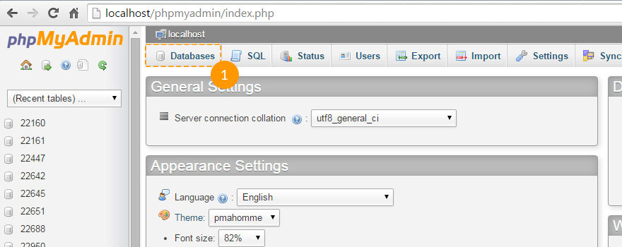
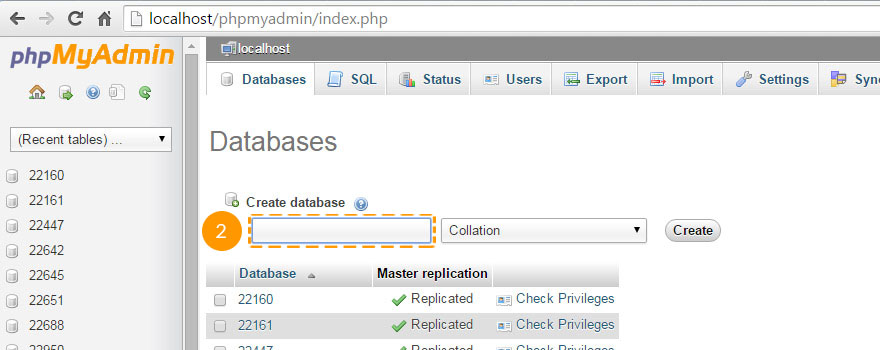

Introduction What can be found in this package and what it can be used for
Thank you for purchasing a Joomla template. This documentation consists of several parts and shows you the entire process of how to set up and administer a Joomla Web site from scratch. We did our best to make this manual as clear and easy to follow as possible.
What is Joomla CMS?
Joomla CMS is an open source solution for building rich content Web sites. It enables you to build Web sites and powerful on-line applications and requires almost no technical skills or knowledge to manage. Many aspects, including its ease of use and extensibility, have made Joomla the most popular Web site software available. Learn More
What is a Joomla template?
A Joomla template is a skin for your Joomla CMS platform. In other words, you can easily change your Joomla Web site appearance installing a new template in a few easy steps. With all its simplicity a Joomla template is provided with all the necessary source files and you are free to edit or extend it the way you need.
Files structure
The template package you have downloaded consists of several folders. Let's see what each folder contains:
- Documentation - contains documentation files.
- documentation.html - the main documentation file. You are right here :)
- Joomla - contains the Joomla theme archive, quick install package and unzip script file.
- theme###.zip - the theme archive. Contains all the theme files. Should be installed through Joomla extension manager.
- fullpackage.zip - contains the complete Joomla installation package with engine files, theme and sample content (database dump, sample images).
- unzip.php - the file used to extract files from the fullpackage.zip when uploaded to the hosting server.
- Screenshots - contains the template screenshots.
- Sources - contains the template source files.
- psd - the template Adobe Photoshop source files (.psd).
- to_the_root_folder - contains the sample content files used to make your website appear as the template live demo. This folder content should be uploaded to your Joomla root directory.
- dump.sql - the database dump file. Contains the theme sample content.
- pkg_bundle.zip - contains additional extensions provided with the theme.
- fonts_info.txt - contains links where the template custom fonts can be downloaded.
- info.txt - contains instructions on how to extract source files.
Prepare What do you need to make this work
Before you proceed to setting up your Joomla Web site please make sure you are fully prepared. Please complete the following preparation steps:
Editing software
To feel comfortable working with the Joomla template we recommend downloading all the applications required. You can see the list of required software at the template live demo page.
The requirements may vary for different templates, so we'll tell you here what is needed in general:
- First of all, you need the right applications to extract the password protected sources_#########.zip archive. You can use WinZip 9+ (Windows) and Stuffit Expander 10+ (Mac).
- You may also need the Adobe Photoshop application. It is used to edit .PSD source files and it is necessary if you want to edit template design graphics and images.
- To edit template source code files you need some code editor like Adobe Dreamweaver, Notepad++, Sublime Text etc.
- To upload files to the hosting server you may need an FTP Manager like Total Commander, FileZilla, CuteFTP etc.
Hosting
As Joomla CMS is a PHP/MySQL based application, you need to prepare a hosting environment to run Joomla.
If you have live hosting, please make sure it matches Joomla software requirements and is ready to be used for Joomla websites.
Otherwise, you can run Joomla locally on your computer using the local server. To create a local hosting server please use the localhost applications such as WAMP, AppServ, MAMP etc. Any of those can be easily installed as any other program and used to run Joomla.
Please check the tutorials below on how to configure the local development environment:
Getting Started What to click to make this work
If you don't want to spend your time installing the template, don't hesitate to order installation service using our live-chat.
Complete Installation
"I don't have a Joomla website and I want to install it from scratch."
Using this method you'll have the Joomla CMS engine, Joomla template, sample content, and all the required extensions installed.
Template Installation
"I already have a Joomla based Web site and just want to change its appearance by installing the new template."
Using this method you'll have the Joomla template and all the required extensions installed.
Complete Installation
The complete installation method can be used if you want to set up a Joomla website from scratch. We assume that you have completed all the preparation steps and have all the necessary stuff.
Creating a Database
When you are done uploading files to the hosting server you can prepare a new database for your Joomla website. You can create the new database using the database management tool from your hosting control panel (usually PhpMyAdmin).
With the phpMyAdmin tool you will be able to create a new database in 3 simple steps: (check the slides below)
- Click the Database button from the top navigation menu to access the database listing.
- Input the database name into the "Create new database" field.
- Click the Create button on the right side.
Your database can be seen in the database listing now. Click on its name to get access to the database.
-

1. Click the Database button to access the database listing.
-

2. Input the database name.
3. Click the Create button. -

4. Your database can be seen in the database listing now. Click on its name to get access to the database.
You can also check the detailed video tutorial on How to create a database
If you have any issues with creating a database, please contact your hosting provider for help and assistance.
Uploading and unzipping
To start working with Joomla you need to upload files to your hosting server. This can be done using your hosting file manager or some third party FTP manager.
- Open your template package directory and go to the 'joomla' directory.
- Select 'unzip.php' and 'fullpackage.zip' files and upload them to your server ( How to upload files to server).
- Type the path to the 'unzip.php' file on your server (http://your_domain_name/unzip.php) in your browser.
- You should see the following screen:

Img 1. Unzip.php initial screen.
- In the 'Choose your zip file' select box please select the uploaded fullpackage.zip file.
- In the 'Unzip to' field specify the directory where you want to extract the files.
- Click the 'Unzip' button to proceed.
Please make sure to set the correct permissions for the directory where you are planning to extract the files. Permissions should be CHMOD 755 or 777 depending on your server configuration.
Joomla CMS installation
Please make sure you have completed all the preparation steps and have all the necessary stuff.
Open your browser and type the path to your Joomla directory in the address bar (e.g. http://your_domain_name/joomla). You should see the initial Joomla CMS installation screen:
Step 1 Configuration
Using the "Select Language" box choose the Joomla installation language.
Please note: The "Select Language" box allows you to choose the language of the Joomla installation process only. It won't affect your Web site language.
You need to fill in all form fields in the "Main Configuration" area. Required fields are marked with the asterisk * symbol.
Fill the "Admin Email", "Admin Username" and "Admin Password" fields in the right column to create a new Joomla website user with administrative rights.
"Admin Email", "Admin Username" and "Admin Password" are required to access your Joomla Web site backend. Keep them safe.

Img 2. Joomla CMS installation. Step 1. Configuration
When you are done click the button in the top-right corner to proceed.
Step 2 Database
At the second step of the Joomla CMS installation you need to input your database details. If you are not sure, please contact your hosting provider to get the correct details.
As you are installing Joomla from scratch you only need to input "Host Name," "Username," "Database Name" and "Password". You can usually leave other options default. However, there can be some differences depending on your hosting provider.

Img 3. Joomla CMS installation. Step 2. Database
When you are done click the button in the top-right corner to proceed.
Step 3 Overview
You are almost done installing Joomla CMS. At the Overview step you need to select whether you want to install Joomla Sample data.
Please note: Sample Data is required if you want to make your Joomla Web site appear as the template live demo with all the images, sample text and modules configured. To make your template appear as in the live demo page select the sample data package named "sample_theme###" where ### is the number of your theme.
Select the Sample data package you want to install or select "None" if you want to set up a pure Joomla website without any content.

Img 4-1. Joomla CMS installation. Step 3. Overview. Sample data import
Below you can check if the database configuration and administration panel access details are valid and send them to your email address if necessary.

Img 4-1. Joomla CMS installation. Step 3. Overview. Configuration
You can also check your installation settings and see if your hosting server matches the Joomla requirements. If you have any red notification boxes in the "Recommended settings" section, please contact your hosting provider for further assistance.

Img 4. Joomla CMS installation. Step 3. Server settings
When you are done click the button in the top-right corner to proceed.
Step 4 Installation Complete
Congratulations! You have successfully installed Joomla CMS.

Img 5. Joomla CMS installation. Step 4. Installation Complete
For security reasons please delete the "Installation" directory from your Joomla root directory.
Tip: You can view the video tutorial on How to install Joomla 3 engine.
Please note: if you finished the "Complete Installation" section, you can skip the next "Template Installation", "Sample Data Installation" and "Extensions Installation" sections as you have all these elements already installed.
Now you are ready to proceed to configuring your Joomla CMS based Web site. Click the "Site" button to view your Web site or "Administrator" to view Joomla backend.
Template Installation
This installation method can be used if you already have a Joomla website and just want to change the website appearance by installing a Joomla template.
Step 1. Open Joomla administration panel and go to the "Extensions > Extensions Manager" screen using the top menu.

Img 6. Joomla template installation. Step 1. Extensions Manager
Step 2. Using the Package File "Choose File" button browse for the "theme###.zip" file in the "joomla" directory of your template package.

Img 7. Joomla template installation. Step 2. Theme archive upload
Click the button to install the Joomla template.
Step 3. When uploading is complete you need to activate the installed template. From the top menu select "Extensions > Template Manager."

Img 8. Joomla template installation. Step 3. Template activation
Select your newly installed template and click the "Make Default" button in the top left corner. Now you can view your website to see the changes.
Sample Data Installation
Sample data is used to make your Joomla website appear as the template live demo page. It contains sample articles, images, modules settings, website settings etc. If you are not planning to use sample images or any other sample content, please skip this step.
To install sample data you need to complete two simple steps.
Step 1. Upload sample images.
To upload sample images please open your template package directory and go to the "sources" folder. There you should see the "to_the_root_directory" directory. It contains files that should be placed to your Joomla installation root. Please use the file manager to upload files to your server.
Step 2. Import SQL file.
The final and most important step of the sample data installation is the import of the SQL file. The SQL file is a dump of the sample database, all Joomla website data is stored there. The SQL file can be imported using your database management tool (phpMyAdmin). The template SQL file - "dump.sql" is located in the "sources" directory of the template package.
Please DO NOT import the SQL file if you have a live website as it will totally replace your website database and all your data will be lost.
Beware: before importing the SQL file please make sure your database table prefix matches the table prefix in the SQL file.
You can check the table prefix directly in the database through the database management tool. Check for the tables names. The prefix is a set of symbols before the table name (e.g. table "jos_assets" prefix is "jos_"). You can also find the database prefix in the "configuration.php" file in your Joomla root directory. Search for line 19: public $dbprefix = 'jos_'; (where the prefix is "jos_").
If the table prefixes don't match, open the "dump.sql" file with your code editor and using the Search & Replace tool (CTRL+F or CTRL+H hotkeys) replace the "jos_" table prefix (used in the SQL file) with the one that matches your database. You can check the detailed video tutorial on how to change database prefix in SQL file.
Now you can import that SQL file to your database.
To import sample data to your database please perform these simple steps (check the slides below):
- Select your database from the database list in the left column in the phpMyAdmin tool.
- Click the "Import" button from the top navigation menu.
- Click "Choose file" and browse for the dump.sql file in the template package "sources" directory.
- Click the "Go" button to start importing the sample data.
-

1. Select your database.
-

2. Click the "Import" button.
-

3. Click "Choose file" and browse for the dump.sql file in the template package "sources" directory.
4. Click the "Go" button to start importing the sample data.
You can also check the detailed tutorial on how to import SQL file using phpMyAdmin tool.
Modules installation
Joomla themes are provided with additional extensions: modules, plugins and components that are used to implement various functionality and features. All the additional extensions can be installed in a couple of clicks using the bundle package provided.
The bundle archive is located in the 'sources' directory of your template package and called 'pkg_bundle.zip'. It can be easily installed, as any other extension or theme, through Joomla admin panel > Extensions manager.
- Open the Joomla administration panel. From the top menu select 'Extensions'. From the dropdown select 'Extensions Manager'.
- Make sure the 'Install' section is selected in the left column.
- Click the 'Browse/Choose file' button and select the 'sources/pkg_bundle.zip' archive.
- Click the 'Upload and install' button to install all the modules.

In case your theme contains some extensions which have not been included into 'pkg_bundle.zip', you need to install each one separately. This can be done exactly as the 'sources/pkg_bundle.zip' installation through the 'Extensions Manager' interface.
The file names of extensions archives usually start with 'mod_', 'com_' or 'plg_,' so you will recognize them easily.
Configuring Modules
Joomla website layout is divided into two main parts - content section and module positions (check the module positions map below for more details). Modules in Joomla are used to output content into prepared positions.
Modules positions map
Available positions may vary in any particular template but general positions map can be seen below:

Img 9. Joomla Template module positions map
As you can see, the content area is marked with a different color. That's because the content area can't handle any modules by default. It displays only the page content.
All positions are turned off if no modules are assigned, so they won't hamper you.
Modules Configuration Table
Please note: If you installed the template sample data or used the Complete installation method, you can skip the following step as it is related to the manual modules configuration.
The table below lists all the modules used in this template and shows how to configure them correctly. All the modules can be accessed through the Joomla Administration panel from the Extensions > Module Manager screen.

Img 10. Joomla Modules manager
1 - Login Form
- Type: mod_login
- Position: modal
- Class Suffix:
- Show Title: yes
- Order: 1
- Pages: All
- Additional info:
2 - Breadcrumbs
- Type: mod_breadcrumbs
- Position: breadcrumbs
- Class Suffix:
- Show Title: no
- Order: 1
- Pages: All
- Additional info:
3 - Search
- Type: mod_search
- Position: navigation
- Class Suffix: navbar-search pull-right
- Show Title: no
- Order: 1
- Pages: All
- Additional info:
4 - Copyright
- Type: mod_footer
- Position: copyright
- Class Suffix:
- Show Title: no
- Order: 1
- Pages: All
- Additional info:
5 - Archived Articles
- Type: mod_articles_archive
- Position: aside-right
- Class Suffix:
- Show Title: yes
- Order: 2
- Pages: Blog
Blog. Donec eu elit in nisi
Blog. In neque arcu vulputate
Blog. Quisque gravida purus vitae
Blog. Vivamus luctus lectus sit
Blog. Vivamus congue turpis in augue
Blog. Curabitur eu dignissim velit
Archives - Additional info:
6 - User Menu
- Type: mod_menu
- Position: header
- Class Suffix:
- Show Title: no
- Order: 1
- Pages: All
- Additional info:
7 - Superfish Menu
- Type: mod_superfish_menu
- Position: navigation
- Class Suffix: navigation
- Show Title: no
- Order: 1
- Pages: All
- Additional info:
8 - Camera Slideshow
- Type: mod_camera_slideshow
- Position: showcase
- Class Suffix:
- Show Title: no
- Order: 1
- Pages: Home
- Additional info:
9 - Social Media
- Type: mod_menu
- Position: copyright
- Class Suffix:
- Show Title: no
- Order: 1
- Pages: All
- Additional info:
10 - Login Form
- Type: mod_login
- Position: aside-right
- Class Suffix: aside
- Show Title: yes
- Order: 3
- Pages: Blog
FAQs
Testimonials
Blog Categories
Blog. Donec eu elit in nisi
Blog. In neque arcu vulputate
Blog. Quisque gravida purus vitae
Blog. Vivamus luctus lectus sit
Blog. Vivamus congue turpis in augue
Blog. Curabitur eu dignissim velit
Archives - Additional info:
11 - Search
- Type: mod_search
- Position: aside-right
- Class Suffix: aside
- Show Title: yes
- Order: 4
- Pages: FAQs
Testimonials - Additional info:
12 - Categories
- Type: mod_articles_categories
- Position: aside-right
- Class Suffix:
- Show Title: yes
- Order: 1
- Pages: Blog
Blog. Donec eu elit in nisi
Blog. In neque arcu vulputate
Blog. Quisque gravida purus vitae
Blog. Vivamus luctus lectus sit
Blog. Vivamus congue turpis in augue
Blog. Curabitur eu dignissim velit - Additional info:
13 - Our Team
- Type: mod_articles_news_adv
- Position: mainbottom
- Class Suffix: team
- Show Title: yes
- Order: 1
- Pages: About
- Additional info:
14 - carouFredSel
- Type: mod_caroufredsel
- Position: feature
- Class Suffix:
- Show Title: yes
- Order: 1
- Pages: Home
- Additional info:
15 - Article Single
- Type: mod_articles_single
- Position: aside-left
- Class Suffix:
- Show Title: yes
- Order: 1
- Pages: About
- Additional info:
16 - Komento Activities
- Type: mod_komento_activities
- Position: aside-right
- Class Suffix:
- Show Title: yes
- Order: 1
- Pages: Blog
Blog Categories
Blog. Donec eu elit in nisi
Blog. In neque arcu vulputate
Blog. Quisque gravida purus vitae
Blog. Vivamus luctus lectus sit
Blog. Vivamus congue turpis in augue
Blog. Curabitur eu dignissim velit - Additional info:
17 - Komento Comments
- Type: mod_komento_comments
- Position: aside-right
- Class Suffix:
- Show Title: yes
- Order: 1
- Pages: Blog
Blog Categories
Blog. Donec eu elit in nisi
Blog. In neque arcu vulputate
Blog. Quisque gravida purus vitae
Blog. Vivamus luctus lectus sit
Blog. Vivamus congue turpis in augue
Blog. Curabitur eu dignissim velit - Additional info:
18 - mod_twitter_widget
- Type: mod_twitter_widget
- Position: aside-left
- Class Suffix:
- Show Title: yes
- Order: 1
- Pages: All
- Additional info:
Extensions
Joomla website functionality can be enhanced using various Joomla extensions. Some of them are often used in our templates. This section will teach you how to work with custom extensions.
Articles Newsflash

Img 11. Articles Newsflash (Advanced) module
The Articles Newsflash (Advanced) module is an enhanced version of the default Joomla Articles Newsflash module. In addition to the default module features, it offers extra configuration options and Bootstrap based module templates.
Additional Options
Number of columns - allows to display articles in multiple columns.
Custom Link - allows you to display a custom link under the module content. It can be linked to the external URL or to some Joomla menu item.

Img 12. Custom Link
Pretext - allows to display custom text before the module content.
Published Date - displays article published date.
Created by - displays article author.
Show intro images - allows to display article intro image.
Intro image align - allows to align intro images.
Image Swoop

Img 13. Image Swoop Module
The "Image Swoop" module is an outstanding responsive slider developed as a combination of the default Joomla Articles Newsflash module and the free open source jQuery plugin Camera Slideshow. It works perfectly on desktop and iOs or Android mobile devices. Compatible with all modern browsers starting from IE8.
The "Image Swoop" module has various configuration options, you can access them by opening the Image Swoop module in the Extensions > Module Manager section of your Joomla administration panel. All the main "Camera Slideshow" jQuery plugin options can be configured in the module settings area.

Img 14. Image Swoop settings
Hover the mouse cursor over the option title to see its description. You can also learn more about Camera Slideshow jQuery plugin options on the official website
Articles Single
Articles single is a module that allows you to output a single article to the desired position.

Img 15. Articles Single module

Img 16. Articles Single settings
The only unusual option in this module is Custom Link. It allows you to display the custom link under the module content. It can be linked to the external URL or to some Joomla menu item.
CarouFredSel
CarouFredSel is an image carousel module developed as a combination of the default Joomla Articles Newsflash module and the CarouFredSel jQuery plugin.

Img 17. CarouFredSel module
All the necessary carousel options are available in module settings.
- Carousel direction
- Item width
- Visible items
- Animation options
- Navigation and controls
Img 18. CarouFredSel module settings
CarouFredSel plugin has many more configuration options. If you want to add your options, you can edit \modules\mod_caroufredsel\tmpl\default.php file.
Komento Comments
Komento is a comments component for Joomla. It allows you to add comments to Joomla articles.

Img 19. Komento component
Komento component can be accessed through the Joomla administration panel in the Components > Komento section.

Img 20. Komento component section
To access configuration settings go to Components > Komento > Integrations and click Articles.
Using component settings you can enable comments for specific categories and Joomla articles, add captcha, user profiles, etc. You can learn more about Komento on the official website.
Our templates have only standard version of Komento included. To get access to additional features and get complete support services for Komento extension we recommend to purchase Komento Professional. Full list of features available here.
Kunena Forum
Kunena is a forum component for Joomla. It allows you to implement a fully functional forum based on the Joomla CMS.

Img 21. Kunena forum
Kunena component can be accessed through the Joomla administration panel under the Components -> Kunena menu.

Img 22. Kunena component section
You can learn more about Kunena component usage and configuration at the official website.
TM Ajax Contact Form Module

Img. 23. TM Ajax Contact Form Module
TM Ajax Contact Form is a contact form module for Joomla engine. This module allows to add contact form on any Joomla page. Data sending is being performed using AJAX requests, so the page is not getting reloaded. Module settings allow to add protection against bot (reCaptcha), set up contact form fields, their labels, set up the email address of the recipient, add the address for CC, error and success messages. You can see the full list of the settings below.

Img. 24. TM Ajax Contact Form module settings
TM Olark live chat module

Image 25. TM Olark live chat module
TM Olark is a live chat module for Joomla.
Image 25-1. TM Olark live chat module settings
In general settings you should add the website identifier which will show up after registration and filling in all the details at https://www.olark.com/install

Image 25-2. Website indentifier in Olark control panel.
Our company provides you with "Bronze" 6 months package for free. Use the following link to register.
SW Facebook Display
Img. 26. SW Facebook Display module
SW Facebook Display - module that allows to display "Facebook Like Box".

Img. 26-1. SW Facebook Display module settings
Here you can see the main SW Facebook Display settings. Feel free to check more details at the official website.
SW Pinterest Display

Img. 27. SW Pinterest Display module
SW Pinterest Display - module that allows to display "Pinterest Board Widget".

Img. 27-1. SW Pinterest Display module settings
Here you can see the main SW Pinterest Display settings. Feel free to check more details at the official website.
SW Twitter Display
Img. 28. SW Twitter Display module
SW Twitter Display - module that allows to display "Twitter Widget".

Img. 28-1. SW Twitter Display module settings
Here you can see the main SW Twitter Display settings. Feel free to check more details at the official website.
TM Instagram
Img. 29. TM Instagram module
TM Instagram - module that allows to display "Instagram Widget"

Img. 29-1.TM Instagram module settings
Here you can see the main TM Instagram settings. Enter the Instagram profile name in the Instagram username field, enter the desired number of images in the Number of photos field, set the ID of your Instagram application in the the field called Your Instagram CLIENT ID. In order to get the ID, follow the link https://instagram.com/accounts/login/?next=%2Fdeveloper%2F where you need to register an account. Then, follow this link http://instagram.com/developer/clients/manage/ and create the application. After that you will get your applications data where you will see the CLIENT ID.
Acymailing

Img. 31. Acymailing component
Acymailing - the subscription component for Joomla!

Img. 31-1. Acymailing settings
Here is the main page of Acymailing component in the admin panel. Feel free to check more details at the official website.

Img. 31-2. Acymailing settings
This is the settings page of Acymailing module. Feel free to check more details at the official website.
This is the list of the system plugins that are getting installed together with Acymailing component:
- plg_acymailing_contentplugin
- plg_acymailing_managetext
- plg_acymailing_online
- plg_acymailing_share
- plg_acymailing_stats
- plg_acymailing_tablecontents
- plg_acymailing_tagcbuser
- plg_acymailing_tagcontent
- plg_acymailing_tagsubscriber
- plg_acymailing_tagsubscription
- plg_acymailing_tagtime
- plg_acymailing_taguser
- plg_acymailing_template
- plg_editors_acyeditor
- plg_system_regacymailing
TM Addthis

Img. 32. TM Addthis plugin
TM Addthis - plugins that allows to display social 'share' buttons .

Img. 32-1. TM Addthis settings
Here you can see the main settings of TM Addthis plugin. Enter the ID of your profile in the profile ID field. In order to get the profile ID, you need to register an account and create the profile at the following page https://www.addthis.com/settings/publisher.
Googlemap plugin

Img. 33. Googlemap plugin
Googlemap - plugin that allows to display Google map.

Img. 33-1. Googlemap settings
Here is the main page of Googlemap plugin in the admin panel. Feel free to check more details at the official website.
Joomla Cookie Directive Plugin
Img. 34. Joomla Cookie Directive Plugin
Joomla Cookie Directive Plugin - plugin that allows to display a banner containing a message about using cookies.

Img. 34-1. Joomla Cookie Directive Plugin settings
Here you can see the main Joomla Cookie Directive Plugin settings. Feel free to check more details at the official website.
JoomGallery
Img. 35. JoomGallery, gallery page
JoomGallery - component that allows to create a complete photopallery based on Joomla!

Img. 35-1. JoomGallery, category page

Img. 35-2. JoomGallery, slider

Img. 35-3. JoomGallery, image description page

Img. 35-4. JoomGallery settings
Here is the main page of JoomGallery component. Feel free to check more details at the official website. In addition, there is a JoomFancybox plugin that has to be installed in order to work with the component.
Configuring Pages
Contacts Page
Contacts page displays the contact form, address and Google Map. To change the contact details (contact email, address, etc) go to Components > Contacts > Contacts > Website Owner. Using the tabs at the top you can get access to various contact options.
To configure what should be rendered at the contacts page go to the System > Global Configuration > Contacts section.
Google Map at the contacts page is created using the Google Maps plugin. It can be configured through Extensions > Plug-in Manager > Google Maps.

Img 26. Plugin Manager
Tip: You can use the filter tool above the plugins list to narrow your search.
Feel free to check the detailed tutorial on how to change Google Map coordinates.
Template Settings
Each Joomla template has its configuration options. They can be adjusted to set up theme layout classes, typography tags, some additional features, etc. Template options can be accessed through the Joomla administration panel in the Extensions > Template Manager section.

Img 27. Template Manager
When you are in the Template Manager section select the theme you want to modify.
Layout
Layout options allow you to modify the main theme layout settings:

Img 28. Layout options
Theme layout - select if you want the theme to be fixed (width in pixels) or fluid (width in percent);
Logo - allows to select the logo image;
Logo Width - allows to select logo container width (according to the Bootstrap grid);
Sidebar Width - allows to set the width for the sidebars.
Typography
Typography options allow to select tags for article titles for various views: featured articles, category view, blog view, single article view, etc. There are several HTML tags can be used to define headings (h1, h2, h3, h4, etc). Tags are different by the logical importance and style. Learn more

Img 29. Typography options
Setting Background video
Img 28. Background video on the website page
Background video can be added to the template with the help of jQuery-plugin Vide. Check if the plugin is enabled. In order to check it, navigate to "Template manager -> Templates", then go to the theme you use (ThemeXXXX Details and Files), open "index.php" file and check if the plugin is initialized, like on the Img. 29. Please, also check if the plugin is available in "js" folder. In case if the plugin is not there, you can download it using the link above and upload it to the required folder. Also do not forget to add the script to the "index.php" file.

Img 29. Plugin initialization check
In order to set a background video, navigate to "Template Manager -> Templates", click on the template you use (ThemeXXXX Details and Files). In an "html -> mod_custom" directory create a "
<?php
/**
* @package Joomla.Site
* @subpackage mod_custom
*
* @copyright Copyright (C) 2005 - 2012 Open Source Matters, Inc. All rights reserved.
* @license GNU General Public License version 2 or later; see LICENSE.txt
*/
defined('_JEXEC') or die;
?>
<div class="mod-custom mod-custom__<?php echo $moduleclass_sfx ?>" id="module_<?php echo $module->id; ?>">
<div class="video-container" data-vide-bg="<?php echo JURI::base( true ).'/media/video/[file_name]'; ?>"></div>
<div class="module-content">
<div class="module-content-inner">
<?php echo $module->content;?>
</div>
</div>
</div>where [file_name] - the name of the video file, without adding file extension.
You should also prepare the following video formats: mp4, ogv, webm and video poster in png, jpg and gif formats. The file name should be the same for all the files and corresponding to the earlier created [file_name]. All the files should be uploaded to media\video\ folder in Joomla root directory
Img 30. Override file content
On the next step you need to create a module that displays the video. Add a custom HTML module with the following content:
Img. 31. Background video module settings
In both "Advanced" tab and "Alternative Layout" drop-down choose your earlier created file template [file_name].
After you perform all the steps you will see the module with the background vide.
Using Parallax effect
Parallax effect can be added to the template with the help of jQuery-plugin Stellar.
In order to add Parallax effect to the page, navigate to "Template manager -> Templates", click on the template name that you use (ThemeXXXX Details and Files) and open "index.php" file. Select the block that you need to add parallax to, for example "folio-row", add the
data-stellar-background-ratio="[value]"
Img 32. Using Parallax effect
where [value] - the ratio that is relative to the natural scroll speed, you can check detailed information on a plugin's Documentation page.
After you perform all the steps, you will see the Parallax effect on the specific block.
Features
Allows to configure additional template features.

Img 30. Additional features
To Top button and ToTop text allow to enable/disable the "to top" button and input button text.
Addendum where to get help, support and additional information
We did our best to make this documentation as clear as possible. However, if you have any difficulties with the Joomla template or any suggestions on improving the template or the documentation, feel free to contact our support team through the:
Help and Support
Documentation
Loading data from Google servers
Some countries have issues connecting to Google servers. This can cause issues loading Google Fonts and Java Script libraries from Google CDN. To resolve these issues please do the following:
Can't load Google Fonts:
- Open \templates\theme****\index.php file
- Locate the line:
$doc->addStyleSheet('//fonts.googleapis.com/css?family=[---your_web_font_name_here---]'); - Replace it with the following:
$doc->addStyleSheet('//fonts.useso.com/css?family=[---your_web_font_name_here---]');
Can't load jQuery
- Open \templates\theme****\index.php file
- Locate the line:
<script src="//ajax.googleapis.com/ajax/libs/jquery/[---your_jquery_version---]/jquery.min.js"></script>
- Replace with the following:
<script src="//code.jquery.com/jquery-[---your_jquery_version---].min.js"></script>
You can also use local copy of jQuery library.
Joomla! Extensions
At extensions.joomla.org you can download more than 6 thousand modules, plugins and components to add various features to your Joomla website.
Additional Links
Validation
Both HTML markup and CSS styles used in our templates are semantically correct and valid. However some W3C errors still can take place. Making code 100% W3C valid eliminates the usage of modern website technologies as CSS3 features and HTML5 markup. Our goal is to deliver rich user experience with high quality templates and sometimes we have to break some rules.
Joomla Social Login
Img. 30. Joomla Social Login component
Joomla Social Login - component that allows to display login buttons to the social network accounts.
Img. 30-1. Joomla Social Login settings
Here you can see the main Joomla Social Login settings. Feel free to check more details at the official website.